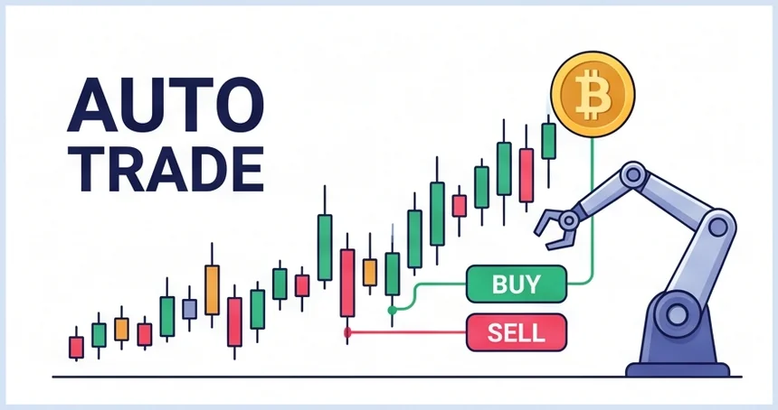
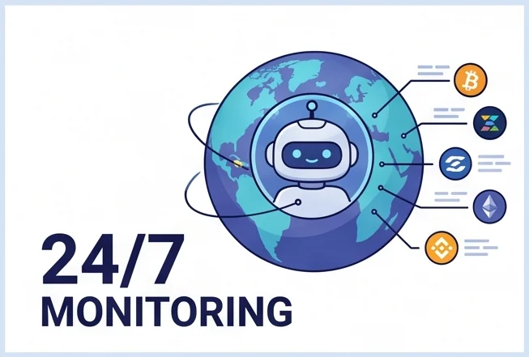
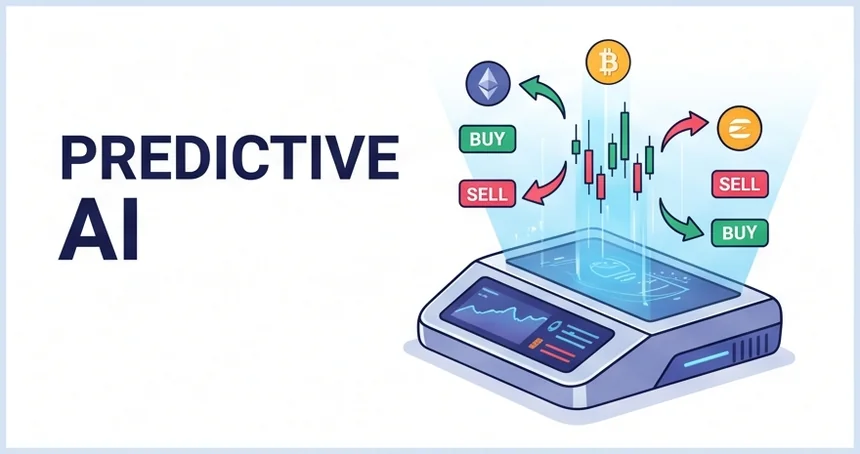

See It Running
Not Mockups. Actual Dashboard Screens.


Cumulative P&L and win rate — the same market-trend panel the bot references live
No emotion, no missed entries, no staying up all night — an automated trading program that scans Binance futures every 10 seconds and exits with tick-level precision. Running 100% locally, on your own PC.
$0 subscription · Free forever · Windows & macOS. New to Binance? Get your account + API key set up in 5 minutes →
Below is a Shadow Mode account snapshot pulled straight from a live Telegram report — real Binance market data, virtual USDT, zero real capital at risk.
Snapshot taken 2026-07-05, 05:04 KST — 7 positions open at that moment, a mix of floating gains and losses, exactly as the bot's exit logic was still managing them. Shadow Mode trades live Binance market data against a virtual balance; this is not a record of real-money trading, and past performance does not guarantee future results. A separate real-dashboard record is published screenshot-by-screenshot on the Real Results page.

JaviD Future Bot doesn't guess, and it doesn't trade on a hunch. Each of its three strategies was built and refined through AI-driven quantitative analysis — reading years of price action, volatility regimes, and order-flow data before a single rule was ever locked in. The bot's only job afterward is to execute that AI-designed strategy exactly, every 10 seconds, without hesitation, fatigue, or a change of heart.
Every entry JaviD takes comes from the same handful of indicators, checked again every single cycle — ATR bands, VWAP deviation, CVD flow, volume-spike thresholds. No memory of the last trade, no gut feeling talking it into or out of a setup.
Most manual traders don't lose to the market — they lose to a moment: the revenge trade after a loss, the FOMO entry, the exit made out of fear. A bot that runs 24 hours a day never has that moment. It just keeps doing what it did yesterday, which is usually the whole point.
"A precision strategy, engineered by AI. And — trust the power of time."
This isn't just our theory. In the 2025 Alpha Arena AI trading competition — six leading AI models, real capital, real crypto markets — the winning model didn't trade the most, it traded the least: entering with conviction on a clear trend and holding through the correction, while rivals panicked, over-traded, and gave back their capital in fees and bad exits. Strategic entry, then patience through the noise, beat constant intervention. Read the coverage →

Double-click start.bat. Dependencies install automatically on first run — then your dashboard opens, ready to configure. No coding knowledge required.
Paste your API key into the Settings tab and hit Test Connection. Keys are encrypted and stored only on your PC — we never see them, and withdrawal permission is never required.
Run Shadow Mode first and watch the strategies trade with zero real risk. When you trust what you see, confirm your leverage/margin summary and hit Start Trading.
New to bots? Start with the green tags — features that take a few clicks. The purple tags are the professional-grade engine working underneath.
 For Everyone
For Everyone
Your API keys never leave your PC. Encrypted locally, executed locally — there is no server in the middle that can be hacked or go down.
 For Everyone
For Everyone
Pick your own coins, or hit the "Top 20 by Turnover" button once and you're done. The dashboard tracks positions across dozens of pairs at the same time, without slowing down.

For EveryoneBalance, equity, cumulative P&L, ROI, win rate and open positions — sent straight to your phone, whenever you ask or on whatever schedule you set.

Pro EngineStrategy-A (JaviD AGRT), Strategy-B (Mean Reversion) and Strategy-C (Breakout) scan your selected coins every 10 seconds. Run one at a time, or run them together.
 Pro Engine
Pro Engine
ATR trailing stops, VWAP reversion, CVD divergence, liquidation-avoidance and volume-spike detection — five signal layers guarding every open position, not just a stop-loss line.
 Pro Engine
Pro Engine
Aggressive, Normal, or Stable investment modes automatically size every entry as a fraction of your balance — the bot adapts to you, not the other way around.
Each entry sizes at up to 1/300th of your account balance per trade — that's the mechanism that spreads risk across dozens of simultaneous positions instead of betting big on any single one. Below roughly 1,000 USDT, that per-trade slice gets small enough that exchange minimum-notional limits and fees start cutting into the edge. 1,000 USDT and up is where the strategy runs the way it was designed to.
The Live Proof section above is exactly that — a Shadow Mode account status pulled from a real Telegram report: real Binance market data, a balance over 1,000 USDT, and zero real capital at risk while it runs. One account, one snapshot in time — not a promise of what any future run will do.
We never take custody of your money, never charge a subscription or performance fee, and never hold withdrawal access to your Binance account. There is no management fee hidden anywhere in this product — and no one at JaviD ever touches your capital.
Binance already charges a small trading fee on every order you place — with or without JaviD. Through Binance's official Broker Program, a portion of that existing fee is shared back to us when you trade under our referral link. You pay Binance the exact same fee either way; we simply receive a rebate slice of it, funded by Binance, not by you.
| JaviD Future Bot | Cloud Subscription Bots | Telegram Signal Groups | |
|---|---|---|---|
| Cost | $0 — free forever | $20–$100+/month | Monthly fee + zero accountability |
| Where it runs | 100% on your PC (local) | Third-party cloud servers | Manual — you place every order |
| API key storage | Encrypted on your PC | Uploaded to their servers | — |
| Withdrawal permission | Never required | Varies by service | — |
| Strategy basis | AI-driven quant design · logic disclosed | Black box | Operator's gut feeling |
| Execution discipline | 10-second cycle · zero emotion | Automated (server-outage risk) | Humans chasing calls — late and shaky |
| Monitoring | Live dashboard + Telegram reports | Web dashboard | None |
Instead of asking you to trust us, here's the structure — and how to verify it: open your firewall or network monitor while the app runs. The only connection you'll see is Binance.
…except there's nothing to pay. It's free. Still, here's what you'll want to know:
Real operating history captured straight from the dashboard — balance, cumulative P&L, win rate, and the losing trades, published unedited.
We wrote a plain-English walkthrough covering account signup, identity verification, and creating a Futures-enabled API key — the exact steps, in order.
A real, screen-by-screen walkthrough — onboarding, API setup, coin selection, and Shadow Mode running live — nine actual screens, not mockups.
A real Binance USDⓈ-M futures execution engine that runs entirely on your own PC — your keys, your funds, your control, on every single trade.
No code yet? Join the Telegram community — codes are issued free after you sign up with our Binance referral link.
Enter your code → click your OS → unzip → run start.bat. First time? Follow along with the User Manual.
Questions about the program? Email us at javidfuturebot@javid-dol.uk or ask on the Community Board.